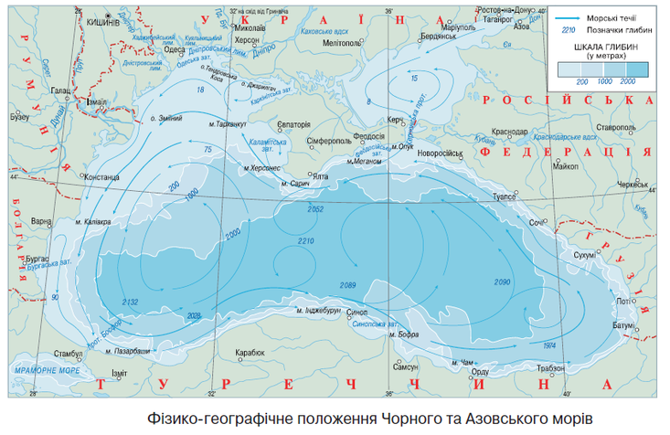

УДК 904 З81
Золотухін А.І. Дослідник (Україна, Миколаїв), azolotukhin@ukr.net
Розвиток нової науки апокрифології дозволив значно просунути питання пошуків Атлантиди завдяки вивченню першоджерел з боку Гомера, навіть невідомих сучасній науки таких, наприклад, як Розетський камінь. Про це в загальному плані йдеться в статті «Атлантида – перша корабельна держава Європи» [1], розміщеної в цьому збірнику. На додаток до неї надаю декілька свідчень, важливих для майбутніх пошуків залишків Атлантиди в Чорному морі нашими підводними археологами на чолі з Є.І. Трушляковим.
Ключові слова: Атлантида, Гомер, апокрифологія, Гераклови стовпи, кільця Книповича, Чорне море, цунамі.
Завдяки апокрифології вже можна вважати доведеним, що Атлантида знаходилася біля Євпаторії й загинула після вибуху вулкану Санторін, за свідченнями Арістея Проконнеського й Гомера 8 жовтня 1447 р. до н.е. від цунамі під час потужного землетрусу в Криму. Наукове дослідження цього вибуху надано в книзі (рос. мовою) И.А. Резанова «Атлантида: фантазия или реальность?» [2] Дата вибуху вулкану Санторін визначена достатньо надійно радіовуглецевим аналізом з шматка дерева, знайденого під 30 м товщиною попелу, й дорівнює 1400±100 р. до н.е., що добре корелює з даними Гомера.
Ось як описує І.О. Резанов процес вибуху: «В повітря злетіло десятки кубічних кілометрів попелу. На всі боки від Санторіна пішли страшні руйнівні хвилі. Вони поширювалися по дну Середземного моря зі швидкістю 20 тисяч км/год. Слідом за ними зі швидкістю 1000 км/год поширювалися повітряні хвилі від вибуху. Трохи відставали від них за часом, зі швидкістю 350 км/год, морські хвилі». Тобто через хвилину після вибуху вулкану на острові Тера імпульс по земній корі міг запустити, як тригер, землетрус в Криму, а через 3-5 годин (!) прийшла хвиля цунамі, яка значно підсилилася в протоках Дарданелл і Босфорі. Гомер пише, що вона сягнула висоти Гераклових стовпів. Сьогодні це гора Юша (107 м), на першій карті протоки Босфор Е. Манганарі 1834 р. вона там називалася Велетенем (111 м), а в часи Гомера це був грязьовий вулкан, який, ймовірно, мав заввишки 130-150 м. Відомо, що в океанах хвилі цунамі при вході у вузькі затоки можуть досягати півкілометрової висоти. [2, c. 122]
Але, цього ще недостатньо, щоб змити місто в море. Ймовірно, саме землетрус зіграв важливу роль. У Криму з IV ст. до н.е. до теперішнього часу відбулося 77 потужних землетрусів. Найбільш імовірно, що затопленню піддалася частина Кримського півострова, яку сьогодні займає Каламітська затока, де і була розташована держава атлантів. Наявність гарячої води в Атлантиді може бути непрямим свідченням того, що можливо Атлантида була побудована на грязьовому вулкані. Від нього сьогодні могло залишитися велике солоне мілководне озеро Сасик, розташоване між містами Євпаторія та Саки. У такому грунті нескладно вирити навколо міста систему кругових і радіальних каналів. У скелястих породах це було зробити неможливо. Поруч з Євпаторією є Мамайська каменоломня, де видобувають черепашник. У ньому важче, але все ж, можна було вирізати канали. З цього черепашника, ймовірно, й будувалася Атлантида. На курорті Євпаторії сьогодні експлуатується три родовища мінеральних вод. Термальні хлоридні, натрієві, слаболужні води середньої мінералізації з температурою на виливу 37-40 градусів палеозойського водоносного горизонту.
Основною причиною того, що Атлантида була змита хвилею цунамі, на мій погляд, було розрідження фундаменту під нею водами 3-х кільцевих каналів за тисячі років існування. Під час землетрусу вся Атлантида могла просто зісковзнути на вібруючій подушці в море. Зрозуміло, що перші кілька сотень років у цьому місці Чорне море було непрохідним, поки хвилями все це не вирівнялося. Анахарсіс, починаючи з 20 років, майже щороку шукав біля берегів Тавриди на кораблі сліди Атлантиди. Гомер в Пеану 24-й пісні «Одіссеї», записав: «Масторід-Телемах бачив на глибині одну частину Атлантиди в 80 д. 183 р. (3.10.593 р. до н.е.) ‒ потужну руку Посейдона». Мова йде про те, що на вершині перед храмом Посейдона стояла його скульптура з тризубом у руці. Якщо місто зісковзнуло на грязьовому мастилі, то це цілком можливо.
Але ось що важливо, Гомер в написі на Розетському камені вже згадує про те, що в часи Атлантиди вони вже знали про два циклопічних віра в Чорному морі, які сьогодні отримали назву за автором цього відкриття кілець Книповича (Рис. 1). Вони також описані ним в «Одіссеї» – завдяки першому лівому кільцю він зміг після розбиття блискавкою корабля в Мармуровому морі на плоту з щогли й кілю дістатися 14 вересня 607 р. до н.е. через Босфор (течія тоді була протилежною сучасної) через перше кільце (вони обидва крутяться проти годинникової стрілки) від Босфору до сучасної Ялти. В серпні 599 р. до н.е. Гомер на плоту завдяки правому кільцю зміг дістатися від Ялти до Батумі (Схерії). [1]
Оскільки І.О. Резанов не знав, що Атлантида знаходилася в Криму, то він детально й не розглядав динаміку її руйнування, а вона, між тим, не має аналогів з усіх відомих науці випадків цунамі. Справа в тому, що на шляху розповсюджування хвилі цунамі, яка вийшла з Босфору в Чорне море, опинився циклопічний вір течії в лівому кільці Книповича, енергія якого значно, на декілька порядків, перевищувала енергію цунамі від вибуху вулкану Санторін через те, що глибини Чорного моря в центрі виру сягають 2 км, а хвилі цунамі це глибинне явище, а не поверхневе, як звичайні морські хвилі.
Енергія хвилі цунамі є постійною величиною, що залежить від її висоти та швидкості. Ось чому Гомер і навів свідчення про те, що хвиля цунамі в Босфорі сягала висоти Гераклових стовпів. Глибина Босфору в середньому дорівнює близько h=50 м. Оскільки довжина хвилі цунамі значно більша за глибину, то до розповсюдження таких хвиль застосовується так зване наближення мілини: хвиля на мілині рухається із швидкістю, що дорівнює квадратному кореневі від добутку прискорення вільного падіння на глибину водоймища V=√ g · h , де g – прискорення вільного падіння (9,8 м/с2), а h – глибина. Тобто швидкість хвилі цунамі при вході в Чорне море дорівнювала за цією формулою біля 80 км/год. Якщо б не було виру кілець Книповича, то хвиля цунамі була б спрямована на Дніпробугський лиман, а не на Крим – дивиться на карту Чорного моря (Рис. 1).
Рис. 1. Карта Чорного моря та обидва кільця Книповича
Поза всяким сумнівом вір Книповича захопив хвилю цунамі та повернув її в бік Криму. При виході на великі глибини моря у 2000 м висота хвилі спала, а швидкість її могла сягнути до 280 км/год. Гомер пише про те, що зовнішній вигляд Кримського півострову до катастрофи був близьким до прямокутного від мису Тарханкут до Херсонесу. Це означає, що вимивання берегу півострова не було обмежено Каламитською затокою, а як мінімум втричі перевищувало її.
Перший і головний висновок з нашого припущення про вплив кілець Книповича на напрям дії цунамі дозволяє казати про те, що Атлантида була вимита не прямим ударом хвилі цунамі, який точно міг би зруйнувати не тільки кільцеві канали, а й всі будівлі з храмом Посейдону, а удар хвиль цунамі йшов по дотичній – вздовж берега і в напрямку руху лівого кільця Книповича (Рис. 1), через те ми маємо таку велику площину вимивання грунту. Саме це і могло врятувати, на мою думку, Атлантиду цілком з каналами. Але залишки її слід шукати ближче до мису Тарканхуту, а не прямо проти Євпаторії.
Другий важливий фактор який міг би привести до повної руйнації Атлантиди був би в тому випадку, якщо б біля неї найбільші глибини моря підходили так близько як біля Ялти (Рис. 1). В цьому випадку вся Атлантида скотилася б з гори до великих глибин моря, точно зруйнувалася та не створювала би тривалого захаращення моря про яке пише Гомер, що сотні років море в цьому районі було непридатним для плавання кораблів. Подивиться на Рис. 1 на доволі широку площину в цьому районі глибин моря між 1 км і 2 км і буде зрозуміло, що зона ця точно була звужена до вибуху вулкану Санторін, а розширилася вона завдяки вимитого грунту з півострову.
Якщо припустити, що глибини прибережного шельфу біля Атлантиди були близькими до сучасних, біля 20-25 м, то швидкість руху хвилі цунамі мала би впасти до 50-55 км/год, а висота хвилі зрости до десятків метрів. Цунамі зазвичай приходить кількома хвилями. Перша хвиля не найбільша, але вона змочила поверхню суходолу й зменшила опір для наступних і була схожа більше на повінь, бо інтервал між хвилями міг становити біля години. При наявності землетрусу перша й друга хвилі могли відірвати від землі Атлантиду, а вже третя, найпотужніша хвиля, на зворотному русі захопила Атлантиду цілком та винесла в море. Тобто є все-таки надія на те, що, що Анахарсіс міг таки бачити на невеликій глибині руку Посейдона, як найвищу точку Атлантиди, через 854 років після катастрофи. Через 2613 років після нього її доведеться шукати в мулі.
Не дивлячись на наші сучасні знання про Атлантиду, треба зауважити, що вона буде залишатися міфом доти, поки наші підводні археологи не знайдуть хоча б один з артефактів, описаних Гомером. І це при повній довірі Гомерові не тільки як видатному науковцю (Піфагору, Евкліду, Фукідіду, Геродоту), а ще й через ті начебто «дрібниці» в його епосах, які є доказом правди.
Ще школярем плавав за збірну України товариства «Динамо» в фіналі змагань на першість СРСР в Москві, в МКІ плавав за інститут і зайнявся ще підводним плаванням. Коли поступив на роботу в НДіПІ «Тайфун», кожну відпустку проводив в Криму і в 70-ті р. захопився підводним світом Карадагу. Плавав від Планерського до Біостанції вздовж прямовисних скель по 6-7 годин і коли вилізав на скелястий беріг, то був вражений тим, що на скелях залишалася шкіра від пальців рук, яка була зморщена й розм’якшена морською водою.
Наприкінці 90-х років, вивчаючи твори Гомера, в 5-й пісні «Одіссеї» (гекзаметри 431-435) прочитав наступне і був вражений вдруге. Три дні буря носила на плоту в морі Одіссея біля Схерії (Батумі), де він зачепився за прямовисні скелі на березі, чергова хвиля відкинула в море. Гомер пише: «Як у поліпа морського, коли його з нори вирвать, В щупальцях вогких дрібні камінці ще тримаються густо, Так і на скелі стрімчастій з долонь його смілих лишилась Клаптями шкіра,»… Це є нарис вченого, який з науковою точністю передає все, що з ним було в житті в «Одіссеї», яку сучасна наука й досі вважає міфом.
До цього можу додати лише, що іманентний вибір імені головного героя епосу є невипадковим і перекладається як особистий займенник: Ὀδυσευ = Ὀδε + σεὺ=συ, тобто Одіссей – «Це я»! А вибір імені Ітаки теж алегоричний: Ἰθάκη = Ἰ + θάκη – «Моє житло», а не батьківщина як дехто з науковців вважає сьогодні! Про своє походження Гомер чітко сказав в 304 гекзаметрі, 24-ї пісні «Одіссеї»: «Родом я з Алібанту», тобто з міста, заснованого атлантами, які врятувалися за декілька днів до катастрофи. Сьогодні це місто знайдено в Миколаєві археологами і отримало назву, як археологічний пам’ятник епохи пізньої бронзи «Дикий Сад»! [3]
Джерела та література
- Золотухін А.І. Сайт «Гомер і Атлантида»: Атлантида – перша корабельна держава Європи!
- Резанов И.А. Атлантида: фантазия или реальность? «НАУКА», М., 1976
- Золотухін А.І. Україна – душа і серце Європи! (Апокрифологія історії України). Николаев, 2018. – 440 с., іл.


{kind=link}